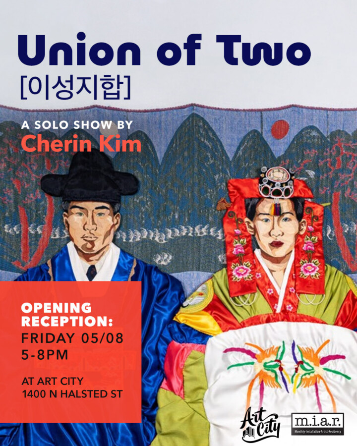

Cherin Kim: Union of Two [이성지합]
Join Art City for the opening reception of Cherin Kim’s Union of Two [이성지합] solo show.
Cherin Kim’s body of work examines images of marriage and migration within personal family archives and explores how the compounded expectations of gender conformity and cultural assimilation shape immigrant narratives. She translates historical documents into textile portraiture to explore how archives become a vessel for identity construction. The photographic image captures and reinforces domestic roles, reproducing social expectations through the repetition of staged imagery.
Behind these ubiquitous portrayals of family union, a story of cultural displacement emerges in the background. Drawing on her experience as a Korean born and raised in Japan, her work speaks to the inherited narratives of diasporic and third culture individuals, investigating how cultural identities are constructed in relation to fractured conceptions of “home.” She reinterprets personal and journalistic photography alongside Korean folk imagery through draping, piecing, weaving, and stitch-based techniques. These slow, handwork processes are an act of remembrance, allowing her to mend the narratives disrupted by displacement and reconnect with the people whose histories inform her own.
Opening reception 5-9pm on Friday, May 8, 2026.